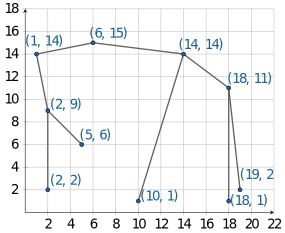
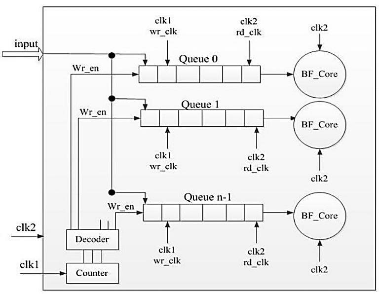
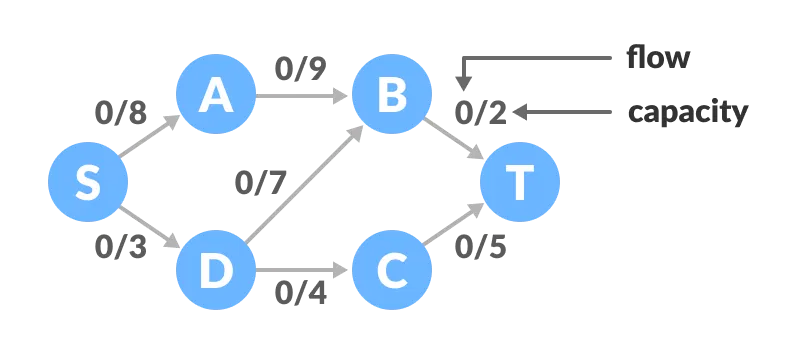
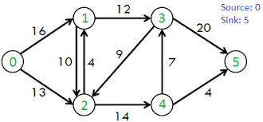
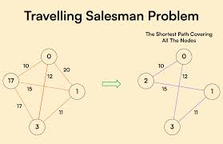
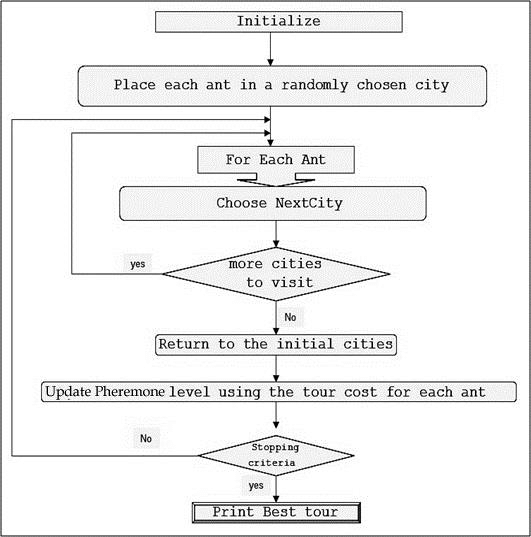
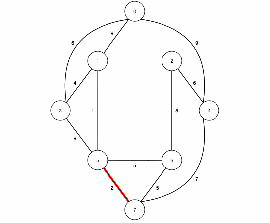

Customer Relationship Management (CRM) Data Synchronization
Fast access and real-time synchronization of customer interactions using efficient data structures.
Automated Lead Scoring System
Utilizes efficient data structures to synchronize customer interactions and transactional records across systems in near real-time. Hash Maps and Queues provide fast access and order-preserving mechanisms to manage high-throughput CRM operations.

Challenges:Dealing with inconsistent scoring across departments. Rebalancing when leads are updated or removed.
Market Benefits:Prioritized sales targeting with near real-time adjustments. Improved conversion rates by focusing on high-potential leads.
Algorithm, Design Techniques, Performance Analysis:
- Data Structure used: Max-Heap (priority_queue in C++) maintains the highest scoring leads at the top.
- Design Approach: Uses greedy selection to prioritize highest scores; insertion maintains heap invariant in O(log n) time.
- Traversal for Reports: In-order traversal for sorted inventory listing.
- Performance Focus: Ensures worst-case operations remain logarithmic (unlike standard BSTs).
- Time Complexity:
- Insertion: O(log n)
- Get Top k Leads: O(k logn)
- Traversal:O(1)
- Access: O(log n)
- Space Complexity: O(n) for n leads.
Heap Code
Sales Forecasting and Trend Analysis
Salesforce processes millions of transactions daily, requiring fast forecasting, temporal analysis, and comparative insights across regions and time periods. Persistent Segment Trees enable this by offering versioned data tracking, rapid historical queries in logarithmic time, and memory-efficient storage through structural sharing. This empowers real-time "what-if" simulations and precise trend analysis.

Challenges: High frequency data updates, real time trend extraction.
Market Benefits: Faster sales insight generation, High-value forecasting, version-based comparision.
Algorithm, Design Techniques, Performance Analysis:
- Data Structure used: AVL Tree - a self-balancing Binary Search Tree. Balancing Technique: Rotations (Left, Right, Left-Right, Right-Left) after insertions/deletions to keep tree height minimal.
- Design Approach: Divide-and-conquer, recursive tree manipulation.
- Time Complexity:update,Query: O(log n)
- Space Complexity: O(log n) per version.
Code for persistent segment tree.
Real-Time Case Management and Routing
Salesforce's Real-Time Case Management and Routing, each case is routed optimally through agents, departments, or decision trees. A* helps identify the shortest or most efficient path for resolution based on both: Actual cost (time, resource load, agent availability), Estimated cost to goal (heuristic: urgency, complexity, escalation level).

Challenges: Dynamic updates, Heuristic Design, State Explosion, Response Time, Continuous Routing.
Market Benefits: Faster Case Resolution, Dynamic load balancing, better customer experience,cost optimization.
Algorithm, Design Techniques, Performance Analysis:
- Data Structure used: A* algorithm: Heiuristic-vased search, Greedy approach.
Best-First Search: Heuristic-based search, Priority Queue.
- Time Complexity:
- In grid-based or graph-based routing: O(E + V log V) with priority queue and proper data structures.
- Worst Case: O(b^d) Where b is branching factor (number of adjacent nodes), d is depth of the optimal solution.
- Space Complexity: O(b^d) for storing all nodes in the open and closed sets (may be optimized).
A* algorithm code
Workflow Automation with Dependency Tracking
Workflows often involve tasks that depend on the completion of other tasks (e.g., approvals, notifications, data updates). Ensuring that all dependencies are resolved before executing a task is crucial for reliable automation.

Challenges: Cyclic dependencies, dynnamic workflows, parallel execution.
Market Benefits: reliable automation, Reduced operational delays, Improved visibility
Algorithm, Design Techniques, Performance Analysis:
- Data Structure used: Topological Sort: Directed acyclic graph (DAG), Depth-first search (DFS)
- Time Complexity:O(V+E). The outer for loop will be executed V number of times and the inner for loop will be executed E number of times.
- Space Complexity: O(V). The queue needs to store all the vertices of the graph.
Code for topological sort.
E-commerce Order and Inventory Sync
A Treap (Cartesian Tree) can be used to maintain the inventory of products, allowing for efficient insertion, deletion, and search operations. This is particularly useful for managing large inventories with frequent updates and queries.

A treap is a data structure which combines binary tree and binary heap (hence the name: tree + heap ⇒Treap). More specifically, treap is a data structure that stores pairs (X,Y) in a binary tree in such a way that it is a binary search tree by X and a binary heap by Y. If some node of the tree contains values (X0,Y0), all nodes in the left subtree have X≤X0, all nodes in the right subtree have X0≤X, and all nodes in both left and right subtrees have Y≤Y0.
Challenges:Random Priority Management, Range Query Optimization
Market Benefits: Fast Inventory Management, Sorted data access.
Algorithm, Design Techniques, Performance Analysis:
- Data Structure used: AVL Tree - a self-balancing Binary Search Tree. Balancing Technique: Rotations (Left, Right, Left-Right, Right-Left) after insertions/deletions to keep tree height minimal.
- Design Approach: Divide-and-conquer, recursive tree manipulation.
- Traversal for Reports: In-order traversal for sorted inventory listing.
- Performance Focus: Ensures worst-case operations remain logarithmic (unlike standard BSTs).
- Time Complexity: O(V+E). The outer for loop will be executed V number of times and the inner for loop will be executed E number of times.
- Space Complexity:
Code For Treap.
Dynamic User Access and Permission Management
Utilizes efficient data structures to synchronize customer interactions and transactional records across systems in near real-time. Hash Maps and Queues provide fast access and order-preserving mechanisms to manage high-throughput CRM operations.

Challenges: Handling duplicate product IDs or SKUs. Managing real-time stock updates with minimal delay.
Market Benefits: Faster Access, supports automated inventory alerts
Algorithm, Design Techniques, Performance Analysis:
- Data Structure used: AVL Tree - a self-balancing Binary Search Tree. Balancing Technique: Rotations (Left, Right, Left-Right, Right-Left) after insertions/deletions to keep tree height minimal.
- Design Approach: Divide-and-conquer, recursive tree manipulation.
- Traversal for Reports: In-order traversal for sorted inventory listing.
- Performance Focus: Ensures worst-case operations remain logarithmic (unlike standard BSTs).
- Time Complexity: Search, Insertion, Deletion: O(log n); Traversal: O(n)
- Space Complexity: O(n) where n is the number of inventory items.
AVL Tree code
Email Campaign Management with Bounce Handling
Email Campaign Management systems sends emails to a list of recipients, tracks delivery status, identifies bounced emails, and optimizes the sending process to avoid resending to bounced addresses. Incorporating data structures like queues and bloom filters helps efficiently manage sending order and quickly filter out previously bounced emails, improving performance and accuracy.

Challenges: Efficient bounce detection, Handling Large Recipient Lists, Avoiding duplicate Sends.
Market Benefits: Improved deliverability, cost efficiency.
Algorithm, Design Techniques, Performance Analysis:
- Data Structure used:Quesue: Manages the sending order of recipients in FIFO manner, enabling batch processing and asynchronous sending.
Hash Map (Dictionary): Maintains authoritative recipient info — email status (pending, sent, bounced), retry counts, etc.
Bloom Filter: Provides fast probabilistic membership checks to filter out previously bounced emails before sending.
Time and Space Complexity Analysis
| Operation |
Data Structure |
Average Time Complexity |
Space Complexity |
| Insert recipient |
Hash Map (Dictionary) |
O(1) |
O(n), where n = recipients |
| Enqueue recipient |
Queue |
O(1) |
O(n) |
| Dequeue recipient |
Queue |
O(1) |
O(n) |
| Check membership |
Bloom Filter |
O(k), k = number of hash functions (small constant) |
O(m), m = size of bit array |
| Add item to Bloom Filter |
Bloom Filter |
O(k) |
O(m) |
| Update recipient status |
Hash Map |
O(1) |
O(n) |
code for Email Campaign Management
Salesforce Data Backup and Recovery Automation
Salesforce stores critical enterprise data such as leads, accounts, contacts, opportunities, and transactions. Data loss due to accidental deletion, corruption, or API integration errors can cause major disruptions. Hence, automated backup and recovery systems are crucial. This system periodically backs up Salesforce records and allows restoration of any record or specific version. It ensures business continuity, compliance, and reliable disaster recovery.
Challenges: Keeping track of multiple versions of records with minimal overhead, Large volumes of data and metadata need to be backed up efficiently.
Market Benefits: Quick recovery ensures uninterrupted operations during failures, Helps meet compliance requirements with secure, time-stamped backups.
Algorithm, Design Techniques, Performance Analysis:
- Data Structure used: Hash Map.
code for Hash map.
Time and Space Complexity
| Operation |
Time Complexity |
Space Complexity |
| Insert/Backup Record |
O(1) average |
O(n * v) — n records, v versions per record |
| Restore Latest Version |
O(1) |
O(1) |
| View All Versions |
O(v) |
O(v) |
| Restore Specific Version |
O(1) |
O(1) |
Multi-Channel Customer Interaction Tracking
Utilizes efficient data structures to synchronize customer interactions and transactional records across systems in near real-time. Hash Maps and Queues provide fast access and order-preserving mechanisms to manage high-throughput CRM operations.
Challenges: Handling duplicate product IDs or SKUs. Managing real-time stock updates with minimal delay.
Market Benefits: Faster Access, supports automated inventory alerts
Algorithm, Design Techniques, Performance Analysis:
- Data Structure used: AVL Tree - a self-balancing Binary Search Tree. Balancing Technique: Rotations (Left, Right, Left-Right, Right-Left) after insertions/deletions to keep tree height minimal.
- Design Approach: Divide-and-conquer, recursive tree manipulation.
- Traversal for Reports: In-order traversal for sorted inventory listing.
- Performance Focus: Ensures worst-case operations remain logarithmic (unlike standard BSTs).
- Time Complexity: Search, Insertion, Deletion: O(log n); Traversal: O(n)
- Space Complexity: O(n) where n is the number of inventory items.
AVL Tree code
Customizable Dashboard with Real-Time Analytics
Utilizes efficient data structures to synchronize customer interactions and transactional records across systems in near real-time. Hash Maps and Queues provide fast access and order-preserving mechanisms to manage high-throughput CRM operations.
Challenges: Handling duplicate product IDs or SKUs. Managing real-time stock updates with minimal delay.
Market Benefits: Faster Access, supports automated inventory alerts
Algorithm, Design Techniques, Performance Analysis:
- Data Structure used: AVL Tree - a self-balancing Binary Search Tree. Balancing Technique: Rotations (Left, Right, Left-Right, Right-Left) after insertions/deletions to keep tree height minimal.
- Design Approach: Divide-and-conquer, recursive tree manipulation.
- Traversal for Reports: In-order traversal for sorted inventory listing.
- Performance Focus: Ensures worst-case operations remain logarithmic (unlike standard BSTs).
- Time Complexity: Search, Insertion, Deletion: O(log n); Traversal: O(n)
- Space Complexity: O(n) where n is the number of inventory items.
AVL Tree code
Sales Territory Management and Optimization
Sales Territory Management involves strategically allocating customers to the most suitable sales representatives based on geography or other features such as purchase history or business potential. Efficient territory optimization can significantly improve field sales productivity, customer satisfaction, and revenue generationUsing KD-Trees (k-dimensional trees) for spatial data allows rapid nearest-neighbor queries, enabling real-time assignment of customers to sales reps. This structure is ideal for optimizing territories based on geographic proximity in 2D (latitude, longitude) or higher dimensions (e.g., sales volume, customer priority, time zones).


Challenges: High dimensionality, real-time allocation, territory overlap.
Market Benefits: Optimized routing, Increases sales productivity, faster CRM decisions.
Algorithm, Design Techniques, Performance Analysis:
Data Structure used: KD-TREE: Efficient nearest neighbor search in 2D or multi-dimensional space.
KD-Tree Operation Time and Space Complexities
| Operation |
Average Time Complexity |
Worst-Case Time Complexity |
Space Complexity |
| Build KD-Tree |
O(n log n) |
O(n log n) |
O(n) |
| Nearest Neighbor Search |
O(log n) (balanced tree) |
O(n) (skewed or unbalanced tree) |
O(log n) recursion stack |
| Insert/Delete Node |
O(log n) (no balancing) |
O(n) (worst case, no balancing) |
O(1) per operation |
Code for kd-tree
Multi-Channel Marketing Campaign Orchestration
Multi-Channel Marketing Campaign Orchestration is about delivering personalized marketing content to the right customers through multiple communication channels (Email, SMS, Social Media, etc.) within defined constraints such as budget, time slots, and channel capacity. By modeling this as a flow network, we can apply the Ford-Fulkerson algorithm to maximize the number of successful message deliveries. This ensures optimal resource usage and maximized campaign reach.


Challenges: Channel Constraints , Customer Fatigue, Optimal Routing.
Market Benefits: Ensures the highest number of message deliveries within constraints, Efficient Budget Use, Helps identify high-yield channels based on flow distribution.
Algorithm, Design Techniques, Performance Analysis:
- Data Structure used: Ford-fulkerson.
- Design Approach:
Adjacency Matrix (int graph[V][V]): Stores capacities between nodes (channels/customers).
Residual Graph :Tracks remaining capacities after each augmentation.
Parent Array (int parent[V]): Stores augmenting path during BFS.
Queue (BFS): For traversing the graph level-by-level to find paths.
Time and Space Complexity - Ford-Fulkerson Algorithm
| Component |
Description |
Time Complexity |
Space Complexity |
| BFS per iteration |
Traverses all edges to find one augmenting path |
O(E) |
O(V) |
| Number of augmenting paths (max) |
Proportional to total flow |
O(F) |
— |
| Total Time Complexity |
Edmonds-Karp (BFS-based Ford-Fulkerson) |
O(V × E²) |
— |
| Residual Capacity Graph |
Stores updated capacities between all node pairs |
— |
O(V²) |
| Parent Array |
Stores path from source to sink during BFS |
— |
O(V) |
| Queue for BFS |
Used for level-order traversal |
— |
O(V) |
| Total Space Complexity |
Graph + parent array + queue |
— |
O(V²) |
Code for Ford-fulkerson.
Partner Relationship Management (PRM)
Partner Relationship Management (PRM) is a system or framework used by businesses to manage their relationships with distributors, resellers, affiliates, and other types of partners. It facilitates coordination, communication, onboarding, performance tracking, and sales support across a network of partner entities. Graph traversal algorithms like BFS (Breadth-First Search) and DFS (Depth-First Search) can effectively model hierarchical relationships, map influence chains, or propagate updates or scores across partners.


Challenges:Complex partner hierarchies, Cycle and duplication detection, Dynamic partner updates.
Market Benefits: Improved partner visibility, Targeted communication, Data-driven decisions
Algorithm, Design Techniques, Performance Analysis:
- Data Structure used: Graph: Represents partner relationships.
- Design Approach: Graph-Based Modeling – Partners as nodes; relationships as directed edges.
Partner Relationship Management – Time and Space Complexity
| Operation |
Time Complexity |
Space Complexity |
| Build Graph |
O(e) |
O(n + e) |
| DFS Traversal |
O(n + e) |
O(n) + stack (O(n)) |
| BFS Traversal |
O(n + e) |
O(n) + queue (O(n)) |
| Partner Insertion |
O(1) |
O(n) |
| Partner Relationship Check |
O(1) (using hash map) |
O(n) |
BFS code
DFS code
Field Service Management
Utilizes efficient data structures to synchronize customer interactions and transactional records across systems in near real-time. Hash Maps and Queues provide fast access and order-preserving mechanisms to manage high-throughput CRM operations.


Challenges: Route explosion, Real-time recalculation.
Market Benefits: Optimal technician routing, improved customer satisfaction, dynamic adjustments.
Algorithm, Design Techniques, Performance Analysis:
- Data Structure used: Ant Colony Optimization (ACO) – a probabilistic technique inspired by the behavior of real ants finding the shortest paths using pheromone trails to solve travelling salesman Problem.
- Design Approach: Divide-and-conquer, recursive tree manipulation.
- Time Complexity: Per iteration (per ant): O(n²); Total: O(k × m × n²) where, k: number of iterations, m: number of ants, n: number of cities/tasks
- Space Complexity: O(n²) for: Distance matrix, Pheromone matrix, O(m × n) for all tours
ACO based Travelling Salesman Problem.
Mergers & Acquisitions Integration
Mergers and Acquisitions (M&A) involve integrating two or more companies into a unified operational, technological, and data structure. In software systems, this means merging organizational hierarchies, databases, access controls, and business processes efficiently without redundancy or conflict.
Objective: Efficiently identify, merge, and manage interconnected systems, ensuring data consistency and minimizing duplication or integration errors.

Challenges: Redundancy Detection, Conflict Resolution, Business and IT layers may be interlinked in non-trivial ways.
Market Benefits: Faster Integration, Ensures structured integration paths and proper data ownership resolution, Tracks the complete connected structure of entities post-merger
Algorithm, Design Techniques, Performance Analysis:
- Data Structure used:Union-Find (DSU) Efficiently track and merge groups of systems
Time and Space Complexity: M&A Integration (Union-Find)
| Operation |
Time Complexity |
Space Complexity |
| Initialization (DSU of N nodes) |
O(N) |
O(N) |
find(x) with path compression |
O(α(N)) |
— |
union(x, y) with union by rank |
O(α(N)) |
— |
| Total merges (M operations) |
O(M × α(N)) |
O(N) |
Code for union-find.